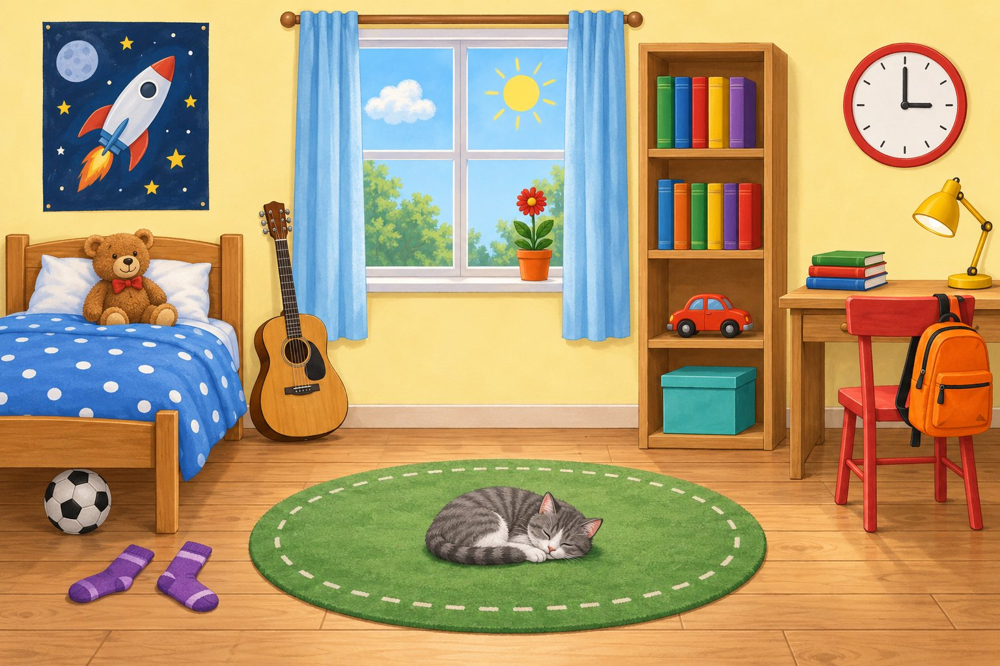
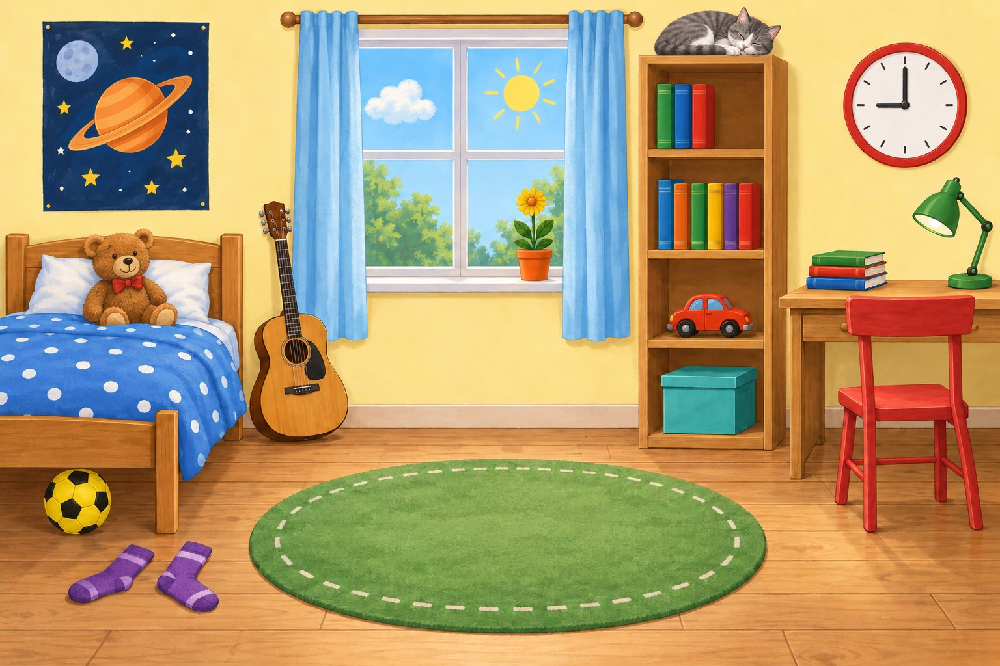
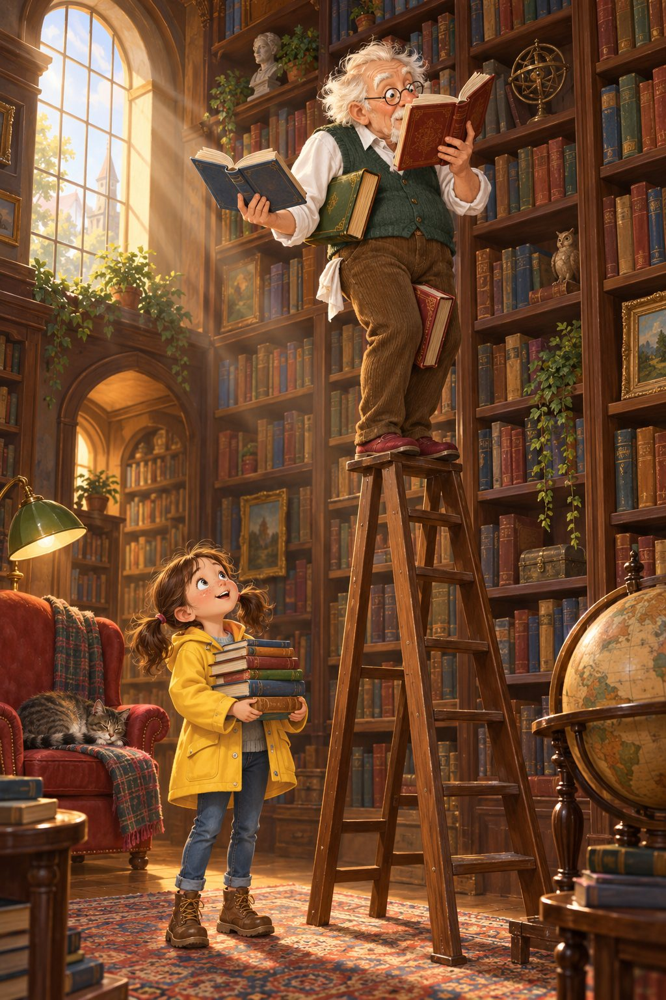
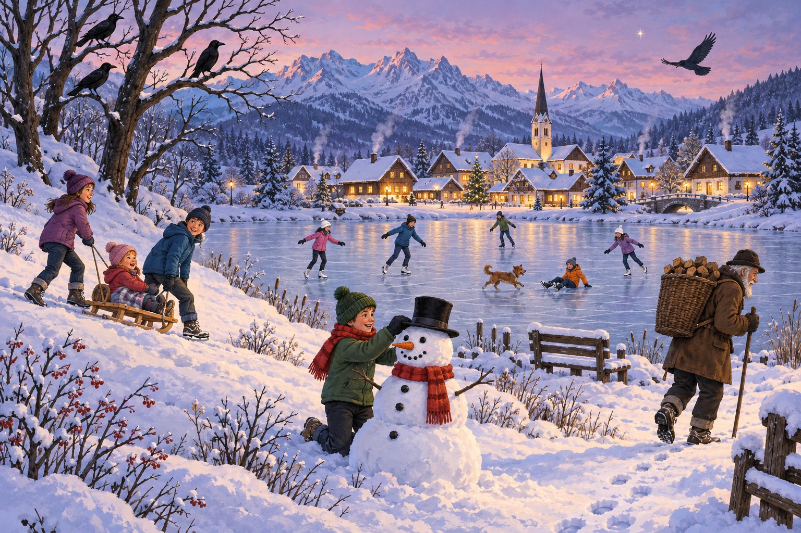
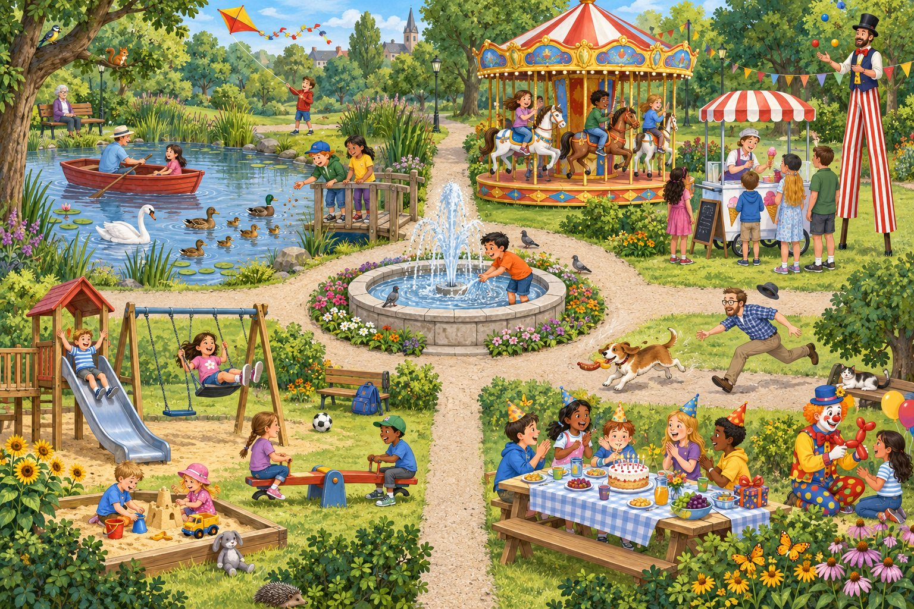

Arbeitsblätter
AB 0 bis AB 17, dazu Lupos Lernplakat und der große Wortspeicher. Jedes Blatt hat einen eigenen Druckknopf – die Navigation wird beim Drucken automatisch ausgeblendet.

Meine Lernlandkarte: Was kann ich schon?
Hallo, ich bin Lupo, der Bilddetektiv! In den nächsten Wochen wirst du selbst zum Bilddetektiv. Auf dieser Karte siehst du alle Stationen unserer Reise. Du füllst sie dreimal aus: heute am Start, kurz vor der Klassenarbeit und danach. So siehst du, wie viel du dazugelernt hast!
Lies jeden Satz. Male dann in der passenden Spalte einen Kreis der Ampel aus. EA
| Nr. | Ich kann … | Start (Stunde 1) | vor der Arbeit | nach der Arbeit |
|---|---|---|---|---|
| 1 | … ein Bild genau ansehen, viele Einzelheiten entdecken und erklären, wozu man Bilder beschreibt.Zum Beispiel: Ich finde alle 8 Unterschiede. | |||
| 2 | … ein Bild in Vordergrund, Mittelgrund und Hintergrund einteilen und Fachbegriffe für Bildstellen benutzen.Zum Beispiel: „in der rechten oberen Ecke“ | |||
| 3 | … mit Präpositionen genau sagen, wo etwas ist.Zum Beispiel: „auf dem Bett“, „unter dem Tisch“ | |||
| 4 | … treffende Verben statt „ist“, „sind“ und „gibt es“ benutzen.Zum Beispiel: „Die Taube pickt …“ | |||
| 5 | … Farben, Formen und Muster mit genauen Adjektiven beschreiben.Zum Beispiel: „eine rot-weiß karierte Decke“ | |||
| 6 | … eine Einleitung schreiben, die die W-Fragen beantwortet.Bildart, Titel, Zeichner/in bzw. Künstler/in, Jahr, Thema | |||
| 7 | … im Hauptteil in einer sinnvollen Reihenfolge beschreiben und meine Satzanfänge abwechseln.Zum Beispiel: vom Vordergrund zum Hintergrund | |||
| 8 | … sachlich und im Präsens schreiben und im Schluss meine Meinung begründen.Zum Beispiel: „Mir gefällt das Bild, weil …“ | |||
| 9 | … meinen Text mit einer Checkliste prüfen und verbessern.Zum Beispiel: mit der Textlupe |
Heute am Start: Was weißt du schon über Bildbeschreibungen? Was möchtest du lernen?
Nach der Arbeit: Darauf bin ich stolz – und das übe ich noch weiter:
Finde die 8 Unterschiede!
Lupos Detektiv-Trick: Feld für Feld! Springe nicht wild hin und her. Ich habe dir ein Raster über die Bilder gelegt. Fang oben links an. Vergleiche dieses Feld in Bild A und in Bild B ganz genau. Dann gehst du ein Feld nach rechts – Reihe für Reihe, wie beim Lesen. So entwischt dir kein Unterschied!


Suche die 8 Unterschiede. Kreise jeden Unterschied in Bild B mit einem Buntstift ein. Basis EA
Notiere die Unterschiede in der Tabelle. Schreibe auch auf, wo im Bild du sie gefunden hast. Standard
Beispiel für die Spalte „Wo?“: links an der Wand, unter dem Bett, im Regal, auf dem Schreibtisch …
| Nr. | Wo? | So ist es in Bild A | So ist es in Bild B |
|---|---|---|---|
| 1 | |||
| 2 | |||
| 3 | |||
| 4 | |||
| 5 | |||
| 6 | |||
| 7 | |||
| 8 |
Vergleicht eure Ergebnisse zu zweit. Welcher Unterschied war am schwersten zu finden? Warum? PA
Im Fundbüro: In Bild B fehlt der Rucksack! Stell dir vor, er gehört dir. Beschreibe ihn so genau, dass das Fundbüro ihn sofort findet. Schreibe auch, wo er in Bild A hängt. Profi
Kim-Spiel: Schau dir Bild A genau 20 Sekunden lang an. Decke es dann ab. Wie viele Dinge kannst du aus dem Gedächtnis aufschreiben? Zählt zu zweit nach!
Was ist wo? Vordergrund – Mittelgrund – Hintergrund
Hintergrund (HG): ganz hinten, weit weg, meist oben im Bild. Die Dinge wirken klein.
Mittelgrund (MG): der Bereich in der Mitte, zwischen vorn und hinten.
Vordergrund (VG): ganz vorn, nah bei dir, meist unten im Bild. Die Dinge wirken groß.

Zeichne mit einem Lineal zwei Linien in das Bild: eine zwischen Vordergrund und Mittelgrund, eine zwischen Mittelgrund und Hintergrund. Schreibe VG, MG und HG an den Rand. Basis
Ergänze die Sätze. Schau genau ins Bild! Basis
a) Im Vordergrund sitzt ein Mädchen auf einer und liest ein grünes Buch.
b) Im Mittelgrund segelt in der Mitte ein über den See.
c) Im Hintergrund steht links auf einem Hügel ein .
d) Am Ende des Stegs sitzt ein Junge und . Er gehört zum .
Sortiere die Wörter aus dem Wortspeicher in die Tabelle. Streiche jedes Wort durch, wenn du es eingetragen hast. Standard
| Vordergrund | Mittelgrund | Hintergrund |
|---|---|---|
Schreibe drei eigene Sätze: einen über den Vordergrund, einen über den Mittelgrund, einen über den Hintergrund. Beginne mit „Im Vordergrund …“, „Im Mittelgrund …“, „Im Hintergrund …“. Profi
Vergleiche den großen Laubbaum vorn mit den Tannen hinten. Welche Bäume sind größer gezeichnet? Warum hat die Zeichnerin oder der Zeichner das wohl so gemacht?
Das Bildraster: 9 Felder
Ein Bild ist wie ein Tic-Tac-Toe-Feld: 3 Reihen und 3 Spalten ergeben 9 Felder. Für jedes Feld gibt es einen Fachbegriff. Wenn du ihn benutzt, weiß jeder sofort, wo er hinschauen muss – auch ohne das Bild zu sehen!
Welcher Fachbegriff gehört zu welchem Feld? Schreibe die Begriffe aus dem Wortspeicher in das passende Feld der Tabelle. Basis
| 1 | 2 | 3 |
| 4 | 5 | 6 |
| 7 | 8 | 9 |
Bild-Detektiv: Was siehst du in jedem Feld? Schreibe Stichwörter in das leere Raster. Finde mindestens zwei Dinge pro Feld. Standard EA
Liegt etwas auf einer Linie? Dann schreibe es in das Feld, in dem der größte Teil zu sehen ist.
| 1 · oben links | 2 · oben Mitte | 3 · oben rechts |
| 4 · links | 5 · Mitte | 6 · rechts |
| 7 · unten links | 8 · unten Mitte | 9 · unten rechts |
Wo ist das? Schreibe ganze Sätze mit einem Fachbegriff. Standard
Beispiel: die Sonne → In der rechten oberen Ecke strahlt die Sonne.
a) das kleine weiße Haus
b) der braune Hund
c) der Junge mit der Angel
d) das grüne Fahrrad
Zeigestock-Rätsel: Schreibe zwei Rätsel für deine Partnerin oder deinen Partner. Nenne nur den Fachbegriff und eine Farbe. Beispiel: „In der linken unteren Ecke sehe ich etwas Graues, Rundes. Was ist es?“ Profi PA
Oft zeigt die obere Reihe den Hintergrund und die untere Reihe den Vordergrund. Stimmt das bei „Sommertag am See“ ganz genau? Prüfe das Mädchen, den Hund und das Segelboot!
Wo genau? Präpositionen im Kinderzimmer
auf, unter, über, vor, hinter, neben, zwischen, in, an sind Präpositionen. Sie sagen dir, wo etwas ist.
Fragst du „Wo?“, ändert sich der Artikel (Dativ):
der Tisch → auf dem Tisch
das Bett → unter dem Bett
die Wand → an der Wand
die Bücher → neben den Büchern
Abkürzung: in + dem = im · an + dem = am
Setze die passende Präposition aus dem Wortspeicher ein. Schau dafür genau ins Bild. Basis
a) Der Teddybär sitzt auf dem Bett dem Kissen.
b) Der Fußball liegt dem Bett.
c) Das Poster hängt dem Bett.
d) Die Gitarre lehnt rechts dem Bett.
e) Die runde Uhr hängt der Wand.
f) Die graue Katze schläft dem Teppich.
g) Das rote Spielzeugauto steht dem Regal.
h) Das Fenster befindet sich der Gitarre und dem Bücherregal.
Ergänze den Artikel im Dativ: dem, der oder den? Standard
a) Die runde Uhr hängt über Schreibtisch.
b) Der rote Stuhl steht vor Schreibtisch.
c) Der Rucksack hängt an Stuhllehne.
d) Der Blumentopf steht auf Fensterbank.
e) Die gelbe Lampe steht neben Bücherstapel.
f) Die Vorhänge hängen links und rechts neben Fenster.
g) Die lila Socken liegen auf Holzdielen.
„Wo ist …?“ Antworte in ganzen Sätzen. Benutze eine Präposition und den richtigen Artikel. Standard
Beispiel: Wo liegen die lila Socken? → Die lila Socken liegen vor dem Bett.
a) Wo steht der Stapel aus drei Büchern?
b) Wo liegt der grüne Teppich?
c) Wo steht die türkisfarbene Kiste?
d) Wo steht der Schreibtisch?
Schreibe vier eigene Sätze über das Kinderzimmer. Benutze die Präpositionen hinter, zwischen, neben und über. Unterstreiche die Präposition und den Artikel. Profi
Wo-Rätsel: Schreibe ein Rätsel wie dieses: „Ich liege unter dem Bett. Ich bin rund und schwarz-weiß. Wer bin ich?“ Lass deinen Nachbarn raten!
Bilddiktat: Rücken an Rücken
Du beschreibst ein Bild – und dein Partner zeichnet es, ohne es zu sehen. Das klappt nur, wenn du ganz genau sagst, wo etwas ist. Genau das ist das Ziel einer Bildbeschreibung!
Lest die Spielregeln gemeinsam. PA Spiel
- Setzt euch Rücken an Rücken. Kind A bekommt Karte A, Kind B einen Bleistift.
- Kind A beschreibt, Kind B zeichnet. Nicht spicken – die Karte bleibt geheim!
- Erst das Große, dann die Einzelheiten. Erst die Mitte, dann links, rechts, oben und unten.
- Fragen sind erlaubt: „Wo genau?“, „Wie groß?“ Profi-Regel: Ihr spielt ohne Fragen.
- Vergleicht und tauscht. Danach beschreibt Kind B die Karte B.
Zeichne hier, was dein Partner dir beschreibt. Zeichner/in
Auswertung: Vergleicht die Zeichnung mit der Karte. Kreuzt an. Basis
| Das ist auf meiner Zeichnung … | da | am richtigen Ort | richtige Größe |
|---|---|---|---|
| 1. Ding: | |||
| 2. Ding: | |||
| 3. Ding: | |||
| 4. Ding: | |||
| 5. Ding: |
Denkt gemeinsam nach und schreibt eure Antworten auf. Standard
a) Welche Wörter haben beim Zeichnen am meisten geholfen?
b) Was hätte genauer beschrieben werden müssen?
c) Warum ist es schwer, ein Bild nur nach einer Beschreibung zu zeichnen? Profi
Kopiervorlage: Bilddiktat-Karten hier ausschneiden – pro Paar einmal
Kind A beschreibt. Nicht zeigen!
Kind B beschreibt. Nicht zeigen!
Verben-Werkstatt: Mehr als „ist“ und „gibt es“

Gähn! Immer nur „ist“, „sind“ und „gibt es“ – da schlafe ich ein. Treffende Verben machen deinen Text lebendig: Der Turm ragt, die Taube pickt, der Junge fährt.
Sortiere die Verben aus dem Wortfeld. Schreibe sie in die passende Spalte. Basis
| Wo und wie etwas ist | Wie sich jemand bewegt | Was jemand tut |
|---|---|---|
Wer tut was? Setze ein passendes Verb ein. Achtung: Es muss im Präsens stehen! Basis
a) Die graue Taube Krümel vom Boden.
b) Der Junge auf einem Tretroller.
c) Die Frau mit dem lila Hut auf das Obst.
d) Der Kirchturm über die Häuser.
e) Die Bäckerin die Hände in die Hüften.
f) Der Verkäufer eine Papiertüte über den Stand.
Der Langweiler-Text: Lies den Text. Kreise jedes „ist“, „sind“, „gibt es“, „sieht man“ und „hat“ ein. Mach dann eine Strichliste. Basis Standard
Auf dem Bild ist ein Wochenmarkt. Im Hintergrund sind viele bunte Häuser. In der Mitte ist ein Kirchturm mit einer Uhr. Links ist ein Obststand. Dort gibt es Äpfel, Orangen und Bananen. Hinter dem Stand ist ein Verkäufer mit einer grünen Schürze. Er hat eine Papiertüte. In der Mitte ist ein Blumenstand. Da gibt es Sonnenblumen und Tulpen. Rechts sieht man einen Bäckerstand. Dort sind Brote, Brötchen und Brezeln. Vorne links ist ein Junge mit einem Tretroller. Vor dem Obststand ist eine Frau mit einem lila Hut. In der Mitte vorn ist eine Taube. Rechts sind ein Vater und seine Tochter. Das Mädchen hat einen lila Luftballon.
| ist | sind | gibt es | sieht man | hat | zusammen |
|---|---|---|---|---|---|
Text-Tuning: Schreibe den Langweiler-Text neu. Ersetze jedes eingekreiste Wort durch ein treffendes Verb. Standard
Basis Verbessere die ersten 8 Sätze. · Profi Verbessere alle Sätze und beginne sie abwechslungsreich (Dahinter …, Daneben …, Auffällig ist …). Ergänze zwei Sätze über Dinge, die im Text fehlen – schau mal an den rechten Bildrand!
Beispiel: Im Hintergrund sind viele bunte Häuser. → Im Hintergrund reihen sich viele bunte Häuser aneinander. Reicht der Platz nicht, schreibst du im Heft weiter.
Verben-Pantomime: Spiele vor, was eine Person auf dem Markt tut. Dein Partner rät das Verb und sagt einen ganzen Satz dazu.
Adjektiv-Treppe & Farbenwerkstatt
Die Adjektiv-Treppe: Mit jeder Stufe wird ein Ding genauer. Schau dir das Beispiel an. Basis
Baue jetzt selbst eine Treppe für eine Markise (Wochenmarkt). Stufe 4 ist ein ganzer Satz. Standard
Der Anfang zählt: Steckbrief & Einleitungs-Puzzle
Die Einleitung ist die Visitenkarte deines Bildes. In zwei Sätzen beantwortest du die W-Fragen: Was für ein Bild? Wie heißt es? Wer hat es gemacht? Wann? Was zeigt es? Wenn du weißt, wer das Bild gemalt oder gezeichnet hat, nennst du den Namen. Weißt du etwas nicht, erfindest du nichts – du lässt es einfach weg.
farbige Illustration
Zeichner/in: nicht angegeben
Jahr: 2026
aus unserem Unterrichtsmaterial

farbige Illustration
Zeichner/in: nicht angegeben
Jahr: 2026
aus unserem Unterrichtsmaterial
Fülle den Bild-Steckbrief aus. Die Angaben findest du auf den Bildschildern neben den Bildern. Das Thema schreibst du in einem kurzen Satz selbst. Basis
| W-Frage | Bild 1 | Bild 2 |
|---|---|---|
| Was für ein Bild? (Bildart) | ||
| Wie heißt es? (Titel) | ||
| Wer hat es gemacht? | ||
| Wann? | ||
| Was zeigt es? (Thema) |
Warum passt der Satz „Er findet das Buch spannend“ nicht in die Einleitung? Wohin gehört er – und wie kennzeichnest du ihn?
Einleitungs-Puzzle: Setze aus den Bausteinen eine Einleitung zu Bild 2 zusammen. Schreibe sie auf. Achtung: Nicht alle Bausteine passen zu Bild 2! Basis Standard
Daumenprobe: Welche Einleitung ist gut, welche ist schwach? Kreuze an, welche W-Fragen beantwortet werden. Male dann einen Daumen nach oben oder nach unten. Standard
A Ich finde das Bild total schön. Da ist ein Mann auf einer Leiter.
B Die farbige Illustration „Opa Willi in der Bibliothek“ ist 2026 entstanden. Sie zeigt einen alten Mann, der in einer Bibliothek auf einer Leiter steht und liest.
C Auf dem Bild sieht man einen Hund, einen Ball, ein Fahrrad, ein Boot und zwei Enten.
D Das Bild „Sommertag am See“ ist eine farbige Illustration aus dem Jahr 2026. Es zeigt einen fröhlichen Sommertag an einem See, an dem Kinder ihre Freizeit verbringen.
| Einleitung | Bildart | Titel | Wer? | Wann? | Thema | Daumen hoch/runter? |
|---|---|---|---|---|---|---|
| A | ||||||
| B | ||||||
| C | ||||||
| D |
Rettet die schwachen Einleitungen! Wähle A oder C und schreibe sie so um, dass alle W-Fragen beantwortet sind. Erkläre auch, was vorher falsch war. Profi
Der rote Faden: Satzstreifen ordnen
Oh nein! Mir ist der Hauptteil meiner Beschreibung vom „Sommertag am See“ durcheinandergefallen. Kannst du mir helfen, die Sätze wieder zu ordnen?
Mein Trick: Ich beschreibe zuerst den Vordergrund, dann den Mittelgrund, dann den Hintergrund. In jedem Bereich gehe ich von links nach rechts. So entsteht ein roter Faden – und dein Leser verläuft sich nicht im Bild.
Lies alle Streifen. Schreibe in den Kreis, zu welchem Bereich der Satz gehört: V = Vordergrund, M = Mittelgrund, H = Hintergrund. Basis
Tipp: Der erste Satz jedes Bereichs nennt den Bereich schon selbst – „Im Vordergrund …“, „Im Mittelgrund …“, „Im Hintergrund …“.
Bringe die Streifen in die richtige Reihenfolge. Schreibe die Nummer (1 bis 16) in das Nummernfeld. Du kannst die Streifen auch ausschneiden und in dein Heft kleben. Standard
Achte auf Verbindungswörter wie Unter dem Baum, Darauf oder Rechts neben dem Mädchen. Sie verraten dir, welcher Satz davor stehen muss. Vorsicht: „Darauf“ kommt zweimal vor – schau ins Bild, worauf das Mädchen und worauf der Junge sitzt!
Hier ausschneiden – jeder Streifen ist ein Satz (oder zwei).
- Nr.Genau in der Mitte segelt ein kleines Segelboot mit einem roten Rumpf und zwei weißen Segeln.R
- Nr.Unter dem Baum liegt eine rot-weiß karierte Picknickdecke.L
- Nr.Über der Landschaft leuchtet ein hellblauer Himmel mit zwei weißen Wolken. In der rechten oberen Ecke strahlt eine gelbe Sonne.G
- Nr.In der Bildmitte springt ein flauschiger brauner Hund mit einem roten Halsband auf einen roten Ball zu.E
- Nr.Im Hintergrund erheben sich grüne, bewaldete Hügel.B
- Nr.Im Vordergrund erstreckt sich eine grüne Wiese mit vielen bunten Blumen.B
- Nr.Auf der linken Seite schwimmen zwei Enten.H
- Nr.Links auf einem Hügel steht ein kleines weißes Haus mit einem roten Dach.U
- Nr.Darauf sitzt ein Mädchen mit langen braunen Haaren und einem blauen Kleid im Schneidersitz. Es liest in einem grünen Buch und lächelt.D
- Nr.Darauf sitzt ein Junge mit einer blauen Kappe, einem gelben T-Shirt und einer blauen kurzen Hose. Er hält eine Angel ins Wasser.I
- Nr.Rechts unten liegt ein grünes Fahrrad im Gras.S
- Nr.Auf der rechten Seite wächst ein dunkelgrüner Tannenwald.N
- Nr.Am linken Bildrand steht ein großer Laubbaum mit einem dicken braunen Stamm.I
- Nr.Im Mittelgrund breitet sich ein blauer See über die ganze Bildbreite aus.C
- Nr.Von rechts ragt ein hölzerner Steg in den See.E
- Nr.Rechts neben dem Mädchen steht ein Weidenkorb mit roten und grünen Äpfeln.B
Kontrolle: Trage die Buchstaben in der richtigen Reihenfolge ein. Wenn alles stimmt, entsteht ein Lösungswort. Basis
Die Lücken zeigen dir: 7 Sätze Vordergrund · 5 Sätze Mittelgrund · 4 Sätze Hintergrund.
Zeichne danach Lupos Blickweg mit Pfeilen in das Bild oben ein (Kamerafahrt).
Welche Wörter verbinden die Sätze miteinander? Schreibe drei Verbindungswörter heraus und erkläre, worauf sie sich beziehen. Profi
Beispiel: „Darauf“ → auf der Picknickdecke
Satzanfänge-Werkstatt
„Dann … dann … dann …“ – gähn! Da schlafe ich ja ein.
Beginne deine Sätze lieber mit einer Ortsangabe. Dann weiß dein Leser sofort, wo er im Bild hinschauen muss. Dreh am Rad und such dir einen Satzanfang aus!
Die Umstellprobe: Stell die Ortsangabe an den Anfang. Das Verb bleibt immer an Platz 2.
Ein Hund rennt in der Bildmitte. → In der Bildmitte rennt ein Hund.
Stelle die Sätze um: Die Ortsangabe kommt nach vorn. Unterstreiche das Verb. Basis
Die Sätze passen zum Bild „Das Kinderzimmer“.
| So steht es da | So klingt es besser |
|---|---|
| Ein Teddybär sitzt vor dem Kissen. | Vor dem Kissen sitzt ein Teddybär. |
| Ein Fußball liegt unter dem Bett. | |
| Eine graue Katze schläft auf dem Teppich. | |
| Eine runde Uhr hängt über dem Schreibtisch. | |
| Ein roter Stuhl steht vor dem Schreibtisch. |
Lies Tims Text über den Wochenmarkt. Zähle, wie oft er „Dann“ schreibt: mal. Basis
Streiche jedes „Dann“ durch. Schreibe einen besseren Satzanfang darüber. Schau dafür genau ins Bild: Wo ist das, was Tim beschreibt?
Schreibe Tims Text verbessert auf. Ersetze auch die langweiligen Verben ist, sieht man, kommt und steht da. Standard
Tipp: Beschreibe zuerst die drei Stände (links – Mitte – rechts), dann die Menschen und Tiere vorn, zum Schluss den Kirchturm.
Schreibe vier eigene Sätze über den Hintergrund des Wochenmarkts (Häuser, Kirchturm, Himmel). Jeder Satz beginnt anders! Profi
Sehen – vermuten – meinen

Ein Detektiv trennt genau: Was sehe ich wirklich? Was vermute ich nur? Und was meine ich?
Im Hauptteil schreibst du nur, was du siehst. Vermutungen kennzeichnest du mit vielleicht oder wahrscheinlich. Deine Meinung kommt erst in den Schluss!
| Grün: Ich sehe. | Gelb: Ich vermute. | Rot: Ich meine. |
|---|---|---|
| Das ist wirklich im Bild. Jeder kann es nachprüfen. | Das könnte so sein. Signalwörter: vielleicht, wahrscheinlich, vermutlich, es sieht so aus, als ob | Das ist mein Gefühl oder meine Meinung: schön, toll, süß, ich finde, mir gefällt |
| → Hauptteil | → Hauptteil (mit Signalwort) | → Schluss |
Male den Kreis vor jedem Satz grün, gelb oder rot an. Basis
- Links im Vordergrund ziehen zwei Kinder einen Holzschlitten den Hügel hinauf.
- Das kleine Kind auf dem Schlitten ist vermutlich ihre kleine Schwester.
- Ich finde das Bild wunderschön.
- In der Bildmitte baut ein Junge mit einer grünen Mütze einen Schneemann.
- Auf den kahlen Bäumen sitzen drei schwarze Krähen.
- Es sieht so aus, als ob es sehr kalt ist.
- Am rechten Bildrand geht ein alter Mann mit einem Stock durch den Schnee.
- Der kleine Hund ist total süß.
- Das Kind, das auf dem Eis sitzt, hat sich vielleicht wehgetan.
- Auf dem zugefrorenen Teich laufen mehrere Kinder Schlittschuh.
- Mir gefällt das Bild nicht so gut, weil ich Kälte nicht mag.
- Im Hintergrund erheben sich schroffe, schneebedeckte Berge.
Sortiere: Schreibe die Nummern der Sätze in die richtige Spalte. Basis
| Grün: Ich sehe. | Gelb: Ich vermute. | Rot: Ich meine. |
|---|---|---|
Verwandle Satz 8 in einen sachlichen Satz für den Hauptteil: Standard
Die Zeitmaschine: Diese Sätze stehen in der Vergangenheit (Präteritum). Hole sie in die Gegenwart (Präsens)! Standard HA 8
| Präteritum (Vergangenheit) – falsch für die Bildbeschreibung | Präsens (Gegenwart) – richtig! |
|---|---|
| a) Zwei Kinder zogen einen Schlitten den Hügel hinauf. | Zwei Kinder ziehen einen Schlitten den Hügel hinauf. |
| b) Ein Junge baute einen Schneemann mit einer Karottennase. | |
| c) Oben rechts flog ein großer schwarzer Vogel. | |
| d) Aus den Schornsteinen stieg Rauch. | |
| e) Auf dem Eis liefen mehrere Kinder Schlittschuh. | |
| f) Im Hintergrund erhoben sich hohe Berge. |
Schreibe einen Schluss (3–4 Sätze) zum Bild „Sommertag am See“. Nenne die Wirkung und deine Meinung mit Begründung. Standard HA 8
Mein Schreibplan: Auf dem Schulhof

Jetzt schreibst du deine erste ganze Bildbeschreibung! Keine Sorge – wir gehen Schritt für Schritt meine 5 Stufen hoch:
1 Schauen → 2 Ordnen → 3 Einleiten → 4 Beschreiben → 5 Bewerten & Prüfen
Schauen: Betrachte das Bild eine Minute lang ganz still. Was fällt dir zuerst auf? Basis
Ordnen: Ziehe im Bild mit Bleistift zwei Linien – zwischen Vordergrund, Mittelgrund und Hintergrund. Fülle dann deinen Stichwortzettel aus. Schreibe nur Stichwörter, keine ganzen Sätze! Basis
| Einleitung W-Fragen | Bildart: Titel: Zeichner/in: Thema („Das Bild zeigt …“): |
|---|---|
| Vordergrund links → Mitte → rechts | z. B. links: 3 Mädchen, Seilspringen, lila Seil … |
| Mittelgrund links → Mitte → rechts | |
| Hintergrund unten → oben | |
| Schluss Wirkung + Meinung | Das Bild wirkt Meinung: , weil |
Einleiten, Beschreiben, Bewerten: Schreibe mit deinem Stichwortzettel die ganze Bildbeschreibung in dein Heft. Standard HA 9: Reinschrift
Profis Profi schreiben ohne Tippkarten und verwenden mindestens fünf verschiedene Satzanfänge.
Die Schreib-Ampel: Wie läuft es bei dir?
Lupos Tippkarten ausschneiden und am Pult auslegen
Nomen: das Schulgebäude, der Backstein, der Giebel, die Doppeltür, das Schild, die Uhr, der Laubbaum, der Busch, das Klettergerüst, das Kletternetz, die Lehrerin, der Haarknoten, die Trillerpfeife, das Fußballtor, der Torwart, das Trikot, das Seil, der Zopf, der Pferdeschwanz, die Kreide, der Asphalt, die Holzbank, der Kapuzenpullover, das Pausenbrot, die Brotdose
Verben: stehen, sitzen, springen, halten, laufen, lachen, essen, tragen, sich befinden, hängen, wachsen, sich erheben, ausbreiten, schweben
Adjektive: zweistöckig, rot, lila, gelb, türkisfarben, orangefarben, dunkelblau, braun kariert, blond, lockig, rund, weiß, grau, hölzern, offen
- Im Vordergrund links spielen …
- In der Mitte vorn sind … auf den Boden gemalt.
- Am rechten Bildrand steht … Darauf sitzt …
- Im Mittelgrund steht links …
- Oben darauf …
- In der Bildmitte steht eine … mit …
- Im Hintergrund erhebt sich …
- Über der Tür hängt …
- Links und rechts neben der Schule …
Satzmuster: Ortsangabe + Verb + wer/was + wie genau.
In der Bildmitte | steht | eine Lehrerin | mit einem lila Pullover.
Das Bild „“ ist eine farbige aus unserem Unterrichtsmaterial. Wer es gezeichnet hat, ist nicht angegeben. Es zeigt in der großen Pause.
Im Vordergrund links spielen drei Mädchen . Zwei Mädchen halten ein Seil. In der Mitte ein Mädchen mit braunen Haaren und einem Rock hoch. In der Mitte vorn sind mit weißer Kreide -Kästchen auf den Boden gemalt. Am rechten Bildrand steht eine . Darauf sitzt ein Junge mit Haaren und einem dunkelblauen . Er isst . Neben ihm steht eine offene mit einem Apfel.
Im Mittelgrund links steht ein rotes . Oben darauf steht ein Mädchen mit einem blonden Pferdeschwanz und . In der Bildmitte steht eine mit einem lila Pullover. Um den Hals trägt sie eine . Rechts befindet sich ein weißes . Darin steht ein mit einem gelben Trikot. Ein Junge mit schwarzen läuft auf den schwarz-weißen zu.
Im Hintergrund erhebt sich ein großes aus rotem Backstein. Über der grauen Doppeltür hängt das Schild „“. Ganz oben am Giebel befindet sich eine große runde . Links und rechts neben der Schule wachsen .
Das Bild wirkt auf mich , weil . Mir gefällt , weil .
Checkliste & Textlupe-Bogen
Auch Profi-Schreiber überarbeiten ihre Texte! Zuerst prüfst du selbst mit der Checkliste. Dann nehmen zwei Mitschüler deinen Text unter die Textlupe.
Teil A: Meine Checkliste
Lies deinen Text langsam durch. Kreuze ehrlich an. Basis
| Prüffrage | Ja | Fast | Noch nicht |
|---|---|---|---|
| Meine Einleitung nennt Bildart, Titel, Zeichner/in und das Thema. | |||
| Mein Text hat drei Teile: Einleitung – Hauptteil – Schluss (Absätze!). | |||
| Ich halte eine feste Reihenfolge ein (z. B. Vordergrund → Mittelgrund → Hintergrund). | |||
| Ich sage bei allem, wo es ist (Ortsangaben). | |||
| Meine Satzanfänge sind abwechslungsreich. | |||
| Ich benutze treffende Verben statt ist, gibt es, sieht man, hat. | |||
| Ich beschreibe Farben, Formen und Größen mit genauen Adjektiven. | |||
| Ich schreibe im Präsens (Gegenwart). | |||
| Im Hauptteil bin ich sachlich. Meine Meinung steht erst im Schluss. | |||
| Mein Schluss nennt die Wirkung und meine Meinung mit „weil“. |
Teil B: Der Textlupe-Bogen 3er-Gruppe
- Ihr seid zu dritt. Jeder legt seinen Text mit diesem Bogen in die Mitte.
- Jeder Text wird von beiden anderen gelesen: Leser/in 1 prüft mit Grün und Blau, Leser/in 2 prüft mit Orange und Rot.
- Ihr markiert im Text mit Buntstift und schreibt eure Rückmeldung in diesen Bogen.
- Zum Schluss bekommt jeder seinen Text zurück und verbessert ihn.
Text von: Leser/in 1: Leser/in 2:
| Lupe | So prüfst du | Das habe ich gefunden |
|---|---|---|
| Grün: Aufbau Leser/in 1 | Klammere Einleitung, Hauptteil und Schluss grün ein. Fehlt etwas in der Einleitung? Springt der Text hin und her? | |
| Blau: Ortsangaben Leser/in 1 | Unterstreiche alle Ortsangaben blau. Zähle sie: ___ . Wo fehlt eine Ortsangabe? | |
| Orange: Verben & Adjektive Leser/in 2 | Kringle ist, sind, gibt es, sieht man, hat orange ein. Unterstreiche besonders treffende Verben und genaue Adjektive. | |
| Rot: Präsens & sachlich Leser/in 2 | Markiere Verben in der Vergangenheit rot. Setze ein rotes M an den Rand, wenn im Hauptteil eine Meinung steht. |
Gebt Rückmeldung mit „2 Sterne und 1 Wunsch“. Bleibt freundlich und genau! Standard
Für den Autor/die Autorin: Das verbessere ich jetzt als Erstes: Standard HA 10
Detektiv-Fall: Der Fehlertext
Ein neuer Fall für dich, Detektiv! Ben hat den Wochenmarkt beschrieben. Leider haben sich 12 Fehler in seinen Text geschlichen. Einige Fehler findest du nur, wenn du ganz genau ins Bild schaust. Schnapp dir deine Lupe!
Bens Text
- Das Bild zeigt einen Markt.
- Im Vordergrund links fuhr ein Junge mit einer roten Kappe auf einem Tretroller.
- Vor dem Obststand steht eine Frau mit einem lila Hut und einer lila Handtasche.
- Sie zeigt auf das Gemüse.
- In der Mitte vorn ist eine Taube.
- Im Hintergrund ragt ein Kirchturm mit einer Uhr über die Häuser.
- Rechts gehen ein Vater und seine Tochter über den Markt.
- Das Mädchen hält einen roten Luftballon.
- Die beiden sehen total nett aus.
- Im Mittelgrund gibt es drei Marktstände.
- Links steht der Obststand mit einer rot-weiß gestreiften Markise.
- Dahinter steht ein Verkäufer mit einer Glatze und einem Schnurrbart.
- Er reichte eine braune Papiertüte über den Stand.
- Irgendwo steht ein Blumenstand mit Sonnenblumen und Tulpen.
- Links befindet sich der Bäckerstand mit einer blau-weiß gestreiften Markise.
- Dort liegen Brote, Brötchen und Brezeln.
- Die Bäckerin stemmt die Hände in die Hüften.
- Im Hintergrund sieht man eine Reihe bunter Häuser mit roten Ziegeldächern.
- Darüber leuchtet ein blauer Himmel mit zwei Wolken.
- Das Bild wirkt auf mich lebhaft und fröhlich. Mir gefällt das Bild, weil ich auch gerne mit meiner Familie auf den Markt gehe.
Fehlerjagd: Lies Bens Text Satz für Satz und vergleiche mit dem Bild. Markiere jeden Fehler mit der passenden Farbe. Mache für jeden gefundenen Fehler einen Strich. Basis
| Fehlerart | Farbe | So viele stecken drin | Gefunden (Striche) |
|---|---|---|---|
| Langweiliges Verb: ist, gibt es, sieht man | orange | ○ ○ ○ | |
| Falsche Zeitform (nicht Präsens) | rot | ○ ○ | |
| Meinung im Hauptteil | rot | ○ | |
| Ortsangabe fehlt oder ist falsch | blau | ○ ○ | |
| Sprung in der Reihenfolge | grün | ○ | |
| Einleitung unvollständig | grün | ○ | |
| Stimmt nicht mit dem Bild überein | lila | ○ ○ |
Verbessere die Fehler. Trage die Nummer des Satzes ein. Standard
| Satz | Das ist falsch | So ist es richtig |
|---|---|---|
| 2 | fuhr (Präteritum) | Im Vordergrund links fährt ein Junge … |
Schreibe für Ben eine vollständige Einleitung. Denke an die W-Fragen! Standard
Schreibe den ganzen Hauptteil fehlerfrei und in einer sinnvollen Reihenfolge neu. Profi
Das große Parkfest – Expertenauftrag
Willkommen beim großen Parkfest! Auf diesem Wimmelbild ist so viel los, dass einer allein gar nicht alles entdecken kann. Zum Glück teilen zwei Kieswege das Bild in vier Viertel. Jede Gruppe wird Experte für ein Viertel.
Danach seid ihr Bildführer: Stellt euch vor, ihr führt eine Besuchergruppe durch das Bild – wie ein Audioguide!

1234Titel: Das große Parkfest · Bildart: farbige Illustration (ein Wimmelbild) im Querformat
Zeichner/in: nicht angegeben (aus unserem Unterrichtsmaterial) · Jahr: 2026
Schaut euch zuerst das ganze Bild an. Was steht genau in der Mitte, wo sich die beiden Wege kreuzen? Wer ist dort? Welche Farben kommen besonders oft vor? Basis GA
Holt euch eure Expertenkarte. Sucht alles, was auf der Karte steht, und hakt es ab. Beantwortet dann die Leitfragen eures Viertels in Stichwörtern. Standard
Expertenkarten ausschneiden – jede Gruppe bekommt eine Karte.
Findet ihr …?
- einen Teich mit Seerosen
- ein rotes Ruderboot mit einem Mann mit Hut und einem Mädchen
- einen weißen Schwan und eine Entenfamilie mit Küken
- zwei Kinder auf einer kleinen Holzbrücke
- einen Jungen mit einem rot-gelben Drachen
- eine ältere Frau auf einer Bank
- ein Eichhörnchen und eine Meise im Baum
- einen Kirchturm ganz hinten in der Ferne
- Wer sitzt im Ruderboot? Was tut der Mann?
- Was machen die beiden Kinder auf der Brücke – und für wen?
- Wo genau sitzt die ältere Frau? Was ist über ihr im Baum?
Findet ihr …?
- ein Karussell mit einem rot-weiß gestreiften Dach
- drei Kinder, die auf Holzpferden reiten
- einen Eiswagen mit einem rot-weiß gestreiften Schirm
- eine Eisverkäuferin, die eine Eistüte herausreicht
- eine Schlange von Kindern vor dem Eiswagen
- eine kleine Tafel vor dem Eiswagen
- einen Mann auf Stelzen mit einem Zylinder, der mit Bällen jongliert
- bunte Wimpelketten zwischen den Bäumen
- Welche Farben haben die Holzpferde auf dem Karussell?
- Wie viele Kinder warten am Eiswagen? Was trägt die Eisverkäuferin?
- Wie sieht der Mann auf den Stelzen aus? (Hut, Fliege, Hose)
Findet ihr …?
- eine Rutsche mit einem Holzhäuschen mit rotem Dach
- einen Jungen, der gerade rutscht
- eine Schaukel mit einem Mädchen
- eine Wippe mit zwei Kindern
- einen Sandkasten mit einer Sandburg
- einen Fußball und einen blauen Rucksack bei einer Bank
- große Sonnenblumen
- einen Stoffhasen und einen Igel
- Was tun die beiden kleinen Kinder im Sandkasten – und womit?
- Was macht der Junge auf der Rutsche mit seinen Armen?
- Wo genau liegen der Fußball, der Stoffhase und der Igel?
Findet ihr …?
- einen Picknicktisch mit einer blau-weiß karierten Decke
- eine Geburtstagstorte mit Kerzen
- Kinder mit bunten Partyhüten
- einen Clown mit roter Nase und blauem Hut
- einen Hund mit einem geklauten Würstchen
- einen Mann mit Brille, der hinterherrennt
- eine Katze, die auf einer Bank liegt
- Luftballons, ein Geschenk und Schmetterlinge
- Was feiern die Kinder? Woran erkennt ihr das?
- Was macht der Clown – und für wen?
- Was ist mit dem Würstchen passiert? Beschreibt die Verfolgungsjagd genau!
Leitfragen für alle Gruppen
- Was fällt euch in eurem Viertel zuerst auf? (Das kommt an den Anfang!)
- Wo genau ist es? Benutzt Ortsangaben: am linken Rand, in der Mitte, oben, unten, davor, dahinter, daneben.
- Was tun die Menschen und Tiere genau? Benutzt treffende Verben: rudern, füttern, reiten, jonglieren, rutschen, schaukeln, wippen, feiern, rennen …
- Welche Farben und Muster haben Kleidung, Dächer, Decken und Schirme?
- In welcher Reihenfolge führt ihr durch euer Viertel? (z. B. vom Blickfang zu den Einzelheiten oder von links nach rechts)
Unsere Stichwörter (Viertel Nr. ): Basis
Schreibt einen Expertentext (5–7 Sätze) über euer Viertel. Nur das, was ihr wirklich seht – sachlich und im Präsens! Standard
„Herzlich willkommen, liebe Besucherinnen und Besucher! Wir führen euch heute durch das Bild ‚Das große Parkfest‘. Es ist eine farbige Illustration aus unserem Unterrichtsmaterial.
In der Mitte kreuzen sich zwei Kieswege, dort steht ein runder Brunnen. Wir zeigen euch jetzt das Viertel links oben / rechts oben / links unten / rechts unten.
Zuerst fällt euch bestimmt … auf. Schaut mal genau hin: Hier … Daneben … Dahinter … Ganz am Rand …
Besonders lustig/spannend finden wir …, weil …
Vielen Dank fürs Zuhören! Habt ihr noch Fragen?“
Tipps: Sprecht langsam und laut. Zeigt auf das, was ihr beschreibt. Jeder aus der Gruppe spricht mindestens einen Satz. Eure Meinung („lustig“, „spannend“) kommt erst am Ende!
Profi-Auftrag: Schreibt eine Einleitung für die ganze Bildbeschreibung. Ergänzt einen Satz, der beschreibt, wie die Wege und der Brunnen das Bild ordnen. Profi
Profi-Blatt: Opa Willi in der Bibliothek Profi
Du bist schon ein echter Profi! In diesem Bild steckt eine kleine Geschichte. Schreibe eine vollständige Bildbeschreibung – die Hilfsfragen zeigen dir den Weg.
Achtung: Das Bild ist hochkant (Hochformat). Hier hilft dir die Reihenfolge „vom Blickfang zu den Einzelheiten“ oder „von oben nach unten“.
Titel: Opa Willi in der Bibliothek
Bildart: farbige Illustration im Hochformat
Zeichner/in: nicht angegeben (aus unserem Unterrichtsmaterial) · Jahr: 2026
Merke: Wenn du weißt, wer ein Bild gemalt oder gezeichnet hat, nennst du in der Einleitung auch die Künstlerin oder den Künstler und das Entstehungsjahr.
Übrigens: Wer so gern liest, dass er dabei alles um sich herum vergisst, den nennt man eine „Leseratte“.
Einleitung: Beantworte die W-Fragen in einem oder zwei Sätzen.
Was für ein Bild? · Wie heißt es? · Wer hat es gemacht? · Wann? · Was zeigt es?
Hauptteil: Beginne mit dem Blickfang – Opa Willi. Beschreibe danach das Mädchen und die Umgebung. Diese Hilfsfragen helfen dir:
- Wo genau steht Opa Willi? Worauf steht er?
- Wie sieht er aus? (Haare, Brille, Kleidung, Schuhe – und was hängt aus seiner Hosentasche?)
- Was macht er? Zähle genau: Wie viele Bücher hat er bei sich – und wo sind sie überall? Welche Farben haben sie?
- Wer steht unten in der Bildmitte? Wie sieht das Mädchen aus, was hält es und wohin schaut es?
- Was entdeckst du in der linken unteren Ecke? Wer schläft dort?
- Was steht in der rechten unteren Ecke?
- Wie sehen die Regale aus? Was steht außer Büchern noch darin? Was liegt auf dem Boden?
- Woher fällt das Licht? Wie wirkt dadurch der Raum?
Schluss: Wie wirkt das Bild auf dich? Passt der Titel? Begründe deine Meinung.
Lerntheke: Fit für die Klassenarbeit
Heute trainierst du für die Klassenarbeit – an 6 Pflichtstationen (S1–S6) und 2 Wahlstationen (W1–W2). Die Reihenfolge darfst du selbst wählen.
So geht’s: Aufgabe lösen → Lösungskarte holen → mit grünem Stift verbessern → Ampel ausmalen. Schummeln bringt nichts – du übst ja für dich!
Mein Laufzettel
| Station | Thema | Erledigt | Kontrolliert | So sicher bin ich |
|---|---|---|---|---|
| S1 | Wo genau? – Ortsangaben | |||
| S2 | Treffende Verben | |||
| S3 | Genaue Adjektive | |||
| S4 | Die Einleitung | |||
| S5 | Die Reihenfolge | |||
| S6 | Sachlich & im Präsens | |||
| W1 | Wahl: Bilddiktat (zu zweit) | |||
| W2 | Wahl: Kim-Spiel (zu zweit) |
Ampel: grün = Das kann ich sicher. · gelb = Das kann ich schon ziemlich gut. · rot = Das muss ich noch üben.
Mein Fazit: Das kann ich schon richtig gut: HA 12
Das übe ich bis zur Klassenarbeit noch (gelbe und rote Stationen wiederholen!):
Die Stationskarten ausschneiden, auf farbigen Karton kleben, laminieren
a) Ergänze die Ortsangabe (Bild „Sommertag am See“):
- strahlt eine gelbe Sonne.
- steht ein großer Laubbaum.
- Der Junge sitzt und angelt.
- liegt ein grünes Fahrrad im Gras.
b) Dativ-Check: Setze ein: dem, der, den
- Das Mädchen sitzt auf d Decke.
- Der Teddy sitzt vor d Kissen.
- Der Ball liegt unter d Bett.
- Die Uhr hängt über d Schreibtisch.
Ersetze das langweilige Verb. Schreibe die Sätze neu (Bild „Auf dem Wochenmarkt“).
- Auf dem Markt gibt es drei Stände.
- Vor dem Obststand ist eine Frau mit einem lila Hut.
- In der Mitte vorn ist eine Taube.
- Man sieht links einen Jungen auf einem Tretroller.
- Über den Häusern ist ein Kirchturm.
- Das Mädchen hat einen lila Luftballon.
a) Baue Adjektiv-Treppen (Bild „Sommertag am See“). Jede Stufe wird genauer!
ein Hund → ein brauner Hund → ein brauner Hund mit einem roten Halsband
- eine Decke → … → …
- ein Boot → … → …
- ein Baum → … → …
b) Farben-Profi: Mach die Farben genauer mit hell-, dunkel-, knall-:
der blaue Himmel · der grüne Tannenwald · der rote Ball
a) Schreibe aus diesem Steckbrief eine Einleitung (2 Sätze):
Bildart: farbige Illustration · Titel: Winterabend am Dorfteich · Zeichner/in: nicht angegeben (aus unserem Unterrichtsmaterial) · Jahr: 2026 · Thema: Kinder spielen an einem Winterabend im Schnee und auf einem zugefrorenen Teich vor einem Dorf.
b) Welche Einleitung ist besser? Warum?
A: „Auf dem Bild sind Kinder und Schnee. Es ist toll.“
B: „Das Bild ‚Winterabend am Dorfteich‘ ist eine farbige Illustration aus unserem Unterrichtsmaterial von 2026. Es zeigt Kinder, die an einem Winterabend vor einem verschneiten Dorf Schlittschuh laufen, einen Schlitten ziehen und einen Schneemann bauen.“
a) Ordne die Sätze (Bild „Das Kinderzimmer“). Schreibe die richtige Reihenfolge der Buchstaben auf.
- A Rechts neben dem Fenster steht ein Bücherregal aus Holz.
- B Vor dem Schreibtisch steht ein roter Stuhl.
- C Am linken Bildrand steht ein Bett mit einer blauen Bettdecke mit weißen Punkten.
- D Ganz rechts steht ein Schreibtisch mit einer gelben Lampe.
- E In der Mitte der Wand befindet sich ein Fenster mit hellblauen Vorhängen.
b) Welche Reihenfolge wurde hier gewählt? Nenne noch zwei andere sinnvolle Reihenfolgen.
a) Grün, Gelb oder Rot? (sehen – vermuten – meinen)
- Der Junge auf dem Steg angelt.
- Das Mädchen liest vielleicht ein spannendes Buch.
- Der Hund ist echt süß.
- Am rechten Bildrand liegt ein grünes Fahrrad.
- Es sieht so aus, als ob der Hund den Ball holen will.
- Ich finde die Picknickdecke schön.
b) Ins Präsens! Die Enten schwammen auf dem See. · Das Segelboot segelte in der Mitte. · Die Sonne strahlte. · Ein Junge saß auf dem Steg.
Setzt euch Rücken an Rücken. Kind A schaut auf Szene A und beschreibt sie genau. Kind B zeichnet nur nach der Beschreibung. Dann vergleicht ihr – und tauscht mit Szene B.
Erst nach dem Zeichnen umdrehen! Zeichenfeld: Rückseite des Laufzettels.
Kind A schaut sich ein Bild 30 Sekunden lang an und dreht es dann um. Kind B stellt die Fragen von der Fragekarte (Lösungskarte W2). Für jede richtige Antwort gibt es einen Punkt. Dann wird getauscht.
Runde 1: Kind A – Bild „Auf dem Wochenmarkt“
Runde 2: Kind B – Bild „Auf dem Schulhof“
Punkte Kind A: / 8 Punkte Kind B: / 8
Profi-Regel: Antwortet in ganzen Sätzen mit Ortsangabe! („Am rechten Bildrand steht ein Bäckerstand.“)
Die Lösungskarten auf die Rückseite kleben oder am Pult auslegen
a) 1. In der rechten oberen Ecke · 2. Am linken Bildrand · 3. auf dem Steg (auch: am Ende des Stegs) · 4. Rechts unten (auch: In der rechten unteren Ecke / Am rechten Bildrand)
b) 1. auf der Decke · 2. vor dem Kissen · 3. unter dem Bett · 4. über dem Schreibtisch
1. Auf dem Markt stehen drei Stände. 2. Vor dem Obststand steht eine Frau … 3. In der Mitte vorn pickt eine Taube Krümel. 4. Links fährt ein Junge auf einem Tretroller. 5. Über die Häuser ragt ein Kirchturm. 6. Das Mädchen hält einen lila Luftballon an einer Schnur.
a) z. B. eine karierte Decke → eine rot-weiß karierte Picknickdecke · ein kleines Boot → ein kleines Segelboot mit einem roten Rumpf und zwei weißen Segeln · ein großer Baum → ein großer Laubbaum mit einem dicken braunen Stamm
b) hellblau · dunkelgrün · knallrot
a) z. B.: „Das Bild ‚Winterabend am Dorfteich‘ ist eine farbige Illustration aus unserem Unterrichtsmaterial. Wer es gezeichnet hat, ist nicht angegeben; es stammt aus dem Jahr 2026. Es zeigt Kinder, die an einem Winterabend im Schnee und auf einem zugefrorenen Teich vor einem Dorf spielen.“
b) B ist besser: Sie beantwortet die W-Fragen (Bildart, Titel, Herkunft, Jahr, Thema). A ist ungenau, nennt keinen Titel und enthält eine Meinung („toll“).
a) C – E – A – D – B
b) Von links nach rechts. Andere sinnvolle Reihenfolgen: vom Vordergrund zum Hintergrund · vom Wichtigsten (Blickfang) zu den Einzelheiten.
a) 1 grün · 2 gelb · 3 rot · 4 grün · 5 gelb · 6 rot
b) Die Enten schwimmen auf dem See. · Das Segelboot segelt in der Mitte. · Die Sonne strahlt. · Ein Junge sitzt auf dem Steg.
Vergleicht eure Zeichnung mit der Szene: Stimmt der Ort jedes Gegenstands (links/rechts, oben/unten, auf/unter/neben)? Stimmen die Farben? Was hat beim Beschreiben gefehlt?
Wochenmarkt: Farbe des Luftballons? (lila) · Was steht auf dem rechten Schild? (BÄCKEREI) · Was reicht der Verkäufer über den Stand? (eine braune Papiertüte) · Wie viele Stände? (3) · Farbe der Kappe des Jungen? (rot) · Was macht die Taube? (pickt Krümel) · Uhrzeit am Kirchturm? (9 Uhr) · Farbe des Huts der Frau? (lila)
Schulhof: Was steht über der Tür? (SCHULE AM PARK) · Farbe des Kapuzenpullovers des Jungen auf der Bank? (dunkelblau) · Farbe des Springseils? (lila) · Was isst der Junge auf der Bank? (ein Pausenbrot) · Farbe des Pullovers der Lehrerin? (lila) · Was hat sie um den Hals? (eine gelbe Trillerpfeife) · Farbe des Klettergerüsts? (rot) · Farbe des Torwart-Trikots? (gelb)
Lupos 5 Stufen zur Bildbeschreibung
„Erst schauen, dann ordnen, dann schreiben!“
Schauen
Genau hinsehen wie ein Detektiv: erst das ganze Bild, dann die Einzelheiten.
Ordnen
Bild einteilen: Vordergrund, Mittelgrund, Hintergrund – oder links, Mitte, rechts. Stichwörter sammeln (Schreibplan).
Einleiten
W-Fragen beantworten: Was für ein Bild? Wie heißt es? Wer hat es gemacht? Wann? Was zeigt es?
Beschreiben
Schritt für Schritt: mit Ortsangaben, treffenden Verben, genauen Adjektiven – im Präsens und sachlich.
Bewerten & Prüfen
Im Schluss: Wirkung und Meinung mit „weil“. Dann alles mit der Checkliste prüfen.
Einleitung
Bildart · Titel · Zeichner/in oder Künstler/in (falls bekannt) · Jahr · Thema
„Das Bild zeigt …“
Hauptteil
Feste Reihenfolge – und dabei bleiben!
Vordergrund → Mittelgrund → Hintergrund
oder links → rechts · oder Wichtiges zuerst
Schluss
Wirkung: fröhlich, ruhig …
Meinung: „Mir gefällt …, weil …“
Ziel: Wer das Bild nicht sieht, kann es sich nach dem Lesen genau vorstellen.
Lupos großer Wortspeicher
Hier findest du alle wichtigen Wörter für deine Bildbeschreibung. Leg den Wortspeicher beim Schreiben neben dein Heft! Bei Nomen steht der Artikel dabei: der (blau), die (rot), das (grün).
1. Ortsangaben – Wo ist etwas im Bild?
2. Präpositionen mit Dativ (Frage: Wo?)
| Präposition | Beispiel | Präposition | Beispiel |
|---|---|---|---|
| auf | auf dem Bett | hinter | hinter dem Stand |
| unter | unter dem Bett | über | über dem Schreibtisch |
| neben | neben der Lampe | in | in dem (= im) See |
| zwischen | zwischen den Bäumen | an | an der Wand |
| vor | vor dem Schreibtisch |
Wo? → Dativ: der Tisch → auf dem Tisch · die Decke → auf der Decke · das Bett → auf dem Bett · die Bäume → zwischen den Bäumen
3. Treffende Verben
Statt ist sind gibt es sieht man hat schreibst du:
4. Genaue Adjektive
Adjektiv-Treppe: ein Hund → ein brauner Hund → ein brauner Hund mit einem roten Halsband